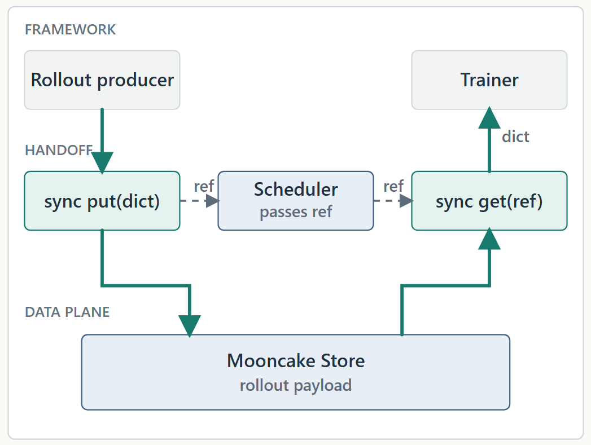
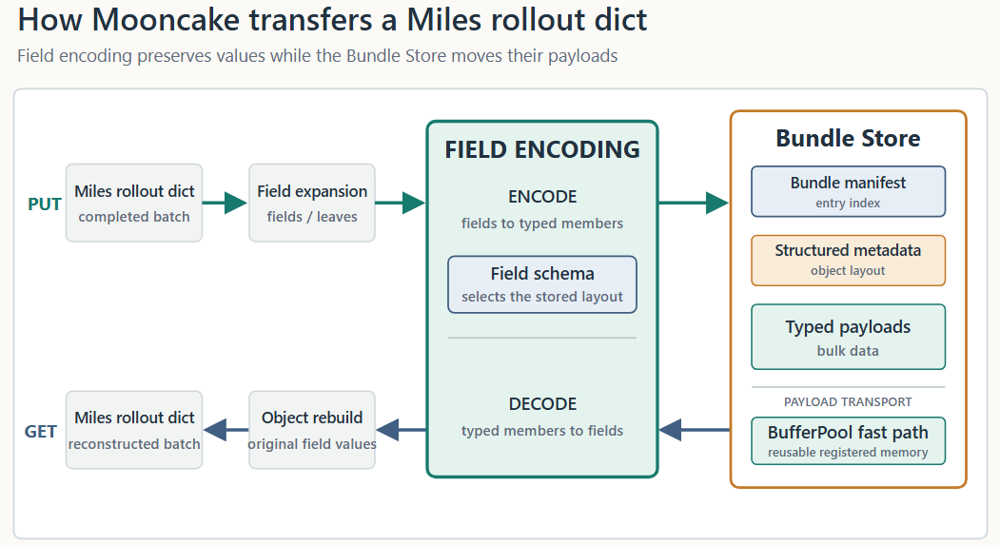
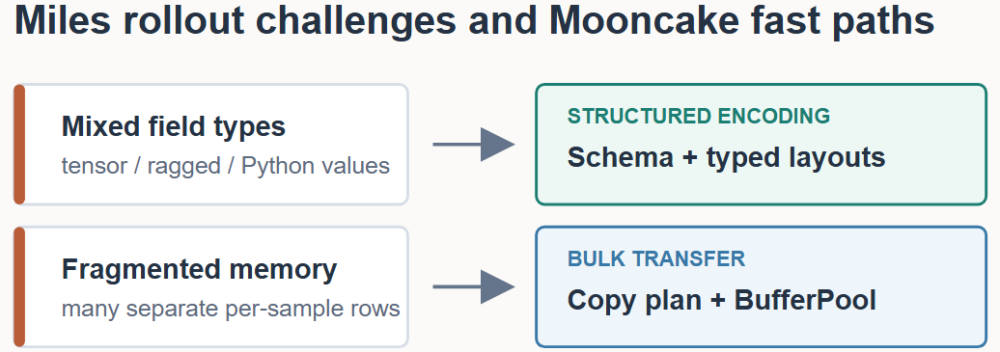
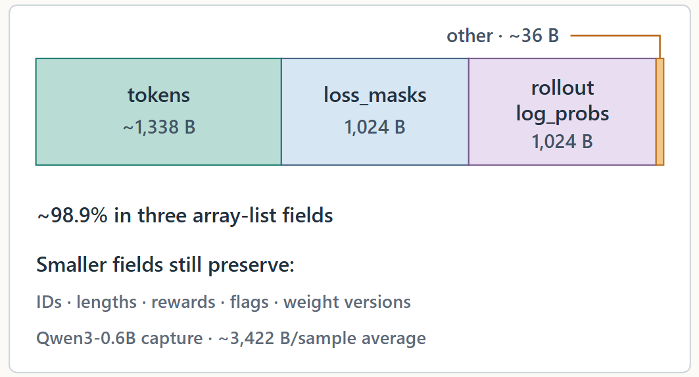
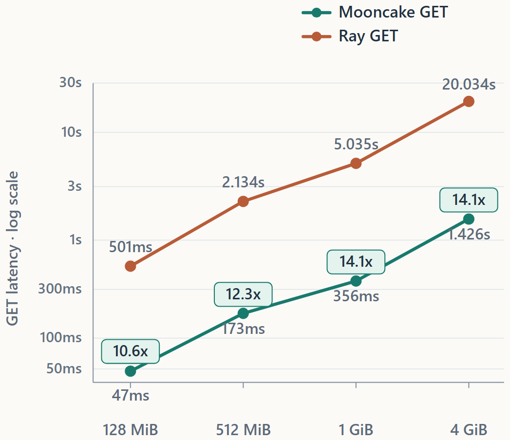

大语言模型的强化学习结合两种截然不同的工作负载：rollout生成和模型训练。
在rollout阶段，推理worker在当前policy上运行一组prompt并生成响应。过程中它们产生学习算法所需的信息，包括生成的token、masks、log probabilities、奖励、序列长度、样本标识符和其他元数据。这些输出共同构成被下一步训练消费的rollout data。
小规模下生成和训练可共享同一执行环境。大规模下，现代RL系统越来越多采用disaggregated架构，rollout生成和训练部署为独立worker组，常跨不同进程、GPU或机器。
两个阶段有根本不同的资源和执行特性。Rollout是推理密集工作负载，其吞吐取决于解码效率、batching和请求调度，而训练依赖大型高度同步的张量计算。分离它们允许每侧独立扩展和调度。
分离还启用流水线级并发。Miles可以在rollout worker生成rollout N+1时训练rollout N。异步RL系统因此允许rollout和训练worker以不同速率推进。但disaggregation也引入新的系统边界：rollout worker产生的数据现在必须在训练消费前移动到一组不同worker。
那个交接直接位于生成和下一次policy更新之间。慢的传输会让trainer等数据、让rollout worker上内存占用更久。对Miles这样的分布式RL系统，高效移动这些结构化rollout数据从推理侧到训练侧成为端到端RL流水线的重要部分。
rollout batch通常是异构结构化对象，而非单一连续tensor。取决于框架和算法，它可能包含生成token、loss masks、log probabilities、奖励、序列长度、样本标识符、路由信息、元数据和其他辅助字段。这些值可以表示为tensors、NumPy arrays、Python标量列表、变长逐样本数组、bytes或任意Python对象。
几个属性使这些数据难以高效移动。
挑战1：异构数据类型和复杂语义。不同rollout字段有根本不同的表示和语义。稠密tensor和数值数组可作为typed buffer高效传输，ragged序列需要行边界信息，标量列表需要保留原始值，元数据或Python对象可能需要更通用的编码。同时trainer必须重建RL框架期望的精确结构，包括dtype、shape、行顺序、null状态和元数据。通用serializer能在功能上处理这些对象，但常以额外转换、拷贝和重建为代价。高效rollout传输因此需要理解每个字段的物理表示和逻辑结构。
挑战2：高度碎片化的内存布局。Rollout数据可包含大量小内存分配。在捕获的Miles工作负载中，tokens、loss_masks和rollout_log_probs等主要字段表示为list[np.ndarray]，每个样本分配一个NumPy数组。随batch增长，逐个传输这些碎片引入重复内存注册和Store操作，而序列化整个Python对象需要遍历、拷贝和重建大对象图。挑战是把碎片化逻辑数据变成高效批量传输，不丢失其原始结构。
共同地，这些挑战使rollout数据移动不止是带宽问题：系统必须高效移动碎片化异构数据，同时保留其结构。
有效数据路径需要同时满足几个要求：效率（避免过度序列化、拷贝、对象重建和逐分配传输开销）、正确性（往返保留字段类型、形状、行边界、null状态、元数据和Python级值）、可扩展性（随样本数、对象碎片和总payload大小增加持续良好）、灵活性（支持异构字段而不强迫RL框架扁平化或重写其原生rollout表示）、可预测交接延迟（足够快交付batch让trainer不因等rollout数据而停滞）。
Miles是面向大规模模型后训练的高性能强化学习框架。它结合SGLang做高吞吐rollout生成和Megatron-LM做可扩展训练，也为偏好直接训练Hugging Face模型实现的负载提供PyTorch FSDP2后端。Miles支持完全异步RL，rollout和训练worker解耦可独立推进，配合快速循环内权重更新、agentic rollout、低精度训练和大规模生产RL工作负载的容错。
这种disaggregated和异步设计使rollout-to-training数据路径成为RL流水线的关键部分。Rollout batch结构化且异构，常含碎片化逐样本数据和框架特定元数据，使高效传输和重建随工作负载规模增长越来越重要。
Mooncake为分布式AI工作负载提供高性能数据面。对RL rollout数据，它用结构化对象传输扩展数据面，允许异构碎片化rollout对象被移动、同时保留其原始结构和语义。
Mooncake现已作为rollout数据传输后端集成进Miles。在Miles捕获的rollout数据上，集成比现有Ray路径传输延迟显著更低：远程GET约10-14× 更快，PUT提升约1.2-1.6×。
结果是在不改变RL编程模型的情况下更快的rollout-to-training交接，为Miles提供面向大型结构化rollout工作负载的更高效数据路径。
Miles支持同步和异步训练循环。任一模式下，一旦rollout worker和trainer部署在独立进程或独立机器，每个完成的rollout batch必须在下一步训练消费前跨过边界。

一个有用的设计原则是分离控制面和数据面。框架scheduler决定rollout batch去哪，但不应携带bulk payload本身。它传递一个轻量transfer reference，排除tensor payload和Store chunk布局，仍允许需要时的JSON-safe元数据。实际rollout payload走独立路径：
框架scheduler传递transfer reference；Mooncake存储和传输payload；训练worker在跑训练步前重建原始对象；所有reader完成后框架移除短生命周期Store对象。
这个分离让调度决策保持轻量，同时允许bulk rollout payload通过专用数据路径移动。
从Miles捕获的rollout数据让这条数据路径具体化。对给定框架配置，字段契约稳定，但字段不共享一个方便的进程内表示。它们分三组：
第一组携带捕获数据的大部分字节。其他字段更小，但不能丢弃或规范化掉：它们携带样本身份、长度、奖励、特性状态和簿记信息。其精确大小取决于工作负载；基准节给出一个实测例子。
| 字段组 | Miles表示 | 传输关注点 |
|---|---|---|
| Token、mask、log-probability行 | 逐样本数值行 | 许多独立行对象；长度可能逐样本不同 |
| IDs、长度、奖励、flags | Python标量列表 | 字节小但训练需要 |
| 可选和对象元数据 | Python值、tensor字典或嵌套对象 | 保留结构、null和启用特性语义 |
在Miles中，当前交接从完整rollout字典就绪后开始。生产者调用 `put(data, type="dict")`，scheduler携带返回的reference，trainer调用 `get` 重建原始字典。
单个传输调用是同步的。生产者只在 `put` 完成后返回reference，trainer在消费对象前等 `get` 完成。
这不阻止RL流水线本身异步。Miles可以在训练rollout N时生成rollout N+1。换句话说，并发位于传输操作之上：每个独立交接同步，而不同rollout和训练阶段可在流水线级重叠。
Mooncake在不同层处理两个挑战。它让结构可见足够久以选择每个字段的高效表示：tensor和数组保持typed，ragged行携带紧凑边界元数据，Python值保留GET重建它们所需的内容。然后它把碎片化内存变成批量I/O。一个copy plan把合格的小行直接打包进可复用的已注册BufferPool chunk，而大型连续tensor和数组可用原生Store路径。这避免两个极端：把整个dict序列化成单个不透明blob，或对每个小分配发一次Store操作。

产生的payload成员作为bundle发布。其manifest记录成员住哪、如何拼合，只在payload就绪后才可见。GET反向跟随该描述取回并重建原始Miles dict。Miles仍用小的公共接口 `put(data, type="dict")` 和 `get(ref, type="dict")`；schema、字段布局、传输计划和重建保持在Mooncake内部。
Mooncake先把dict展开成可高效编码的leaves。数组和tensor保持typed，ragged行携带紧凑边界元数据，受支持的Python值保留重建所需信息。框架提供的schema为模糊或性能敏感字段固定存储表示；无schema时Mooncake从观测值推断。
同样的选择适用于多模态数据。处理的pixels和相关模型输入可留在tensor路径。PIL images、编码的PNG或JPEG bytes和变长媒体列表使用媒体感知布局，保留其边界和重建元数据，不强迫每个表示穿过同一serializer。
每行单独发送创造数千个registration和Store请求。先拼接整个字段避免请求数，但增加全尺寸临时量。Mooncake改为构建copy plan，按需填充可复用的已注册BufferPool chunk。其原生路径直接把合格数值行拷进这些chunk，避免Python行循环和临时拼接。大型连续数组和tensor在Store支持时仍用直接或原生路径。
Mooncake只在所有payload和元数据就绪后发布bundle manifest，所以reader永看不到写了一半的Miles dict。GET时manifest识别要取回的members，结构化元数据描述如何重建每个字段。合格读取可瞄准BufferPool支撑的目的地，无需中间 `bytes` 对象，typed ragged行可直接查看结果缓冲。

trainer用完后释放其本地BufferPool支撑结果。所有reader完成后，Miles移除短生命周期Store对象，Mooncake回收其payload chunk和manifest。
对固定框架配置，切换模型本身不改变字段契约。传输大小改而跟随样本数、prompt和响应长度，以及teacher log probabilities、路由信息或多模态输入等可选字段。

Miles用Qwen3-0.6B在数学prompt上生成源数据（rollout_id=0，8个源样本）。捕获中每个响应有256 token。基准中三个大数值字段归一化为typed ndarray行，同时保留其值、行长、dtypes和逐样本碎片化。跨这些样本平均，逻辑payload分解如下：
前三个字段约占3,386字节，即此样本布局的98.9%。更大基准payload重复八个捕获样本，保留字段类型和碎片化分配模式，同时增加逻辑样本数。这个计算描述该捕获；它不定于固定Miles样本大小。
| 一个捕获样本的部分 | 计算 | 逻辑字节 |
|---|---|---|
tokens | 平均prompt+response token数x 4 B（int32） | ~1,338 B |
loss_masks | 256项x 4 B（int32） | 1,024 B |
rollout_log_probs | 256项x 4 B（float32） | 1,024 B |
| 标量和对象字段 | IDs、长度、奖励、flags和版本元数据 | ~36 B |
| 总计 | ~3,422 B |
基准测量Miles使用的completed flat-dict交接，比较Miles Ray后端与Mooncake结构化对象传输。

PUT是生产者加载payload后的一次计时后端调用。GET是预热后三次远程消费者trial的平均。参考序列化和scheduler交接在计时区域外。这些数字覆盖payload传输和重建，不是端到端训练吞吐。
跨测试payload大小，Mooncake让Miles GET比Ray后端快约10-14×。PUT提升约1.2-1.6×。
PUT显示更小增益。其计时路径包括Python对象遍历、ragged行打包、元数据和manifest构造，以及payload传输。这个工作负载下GET改善更多，而trainer必须完成它才能开始训练步。
Miles集成建立了基本数据路径。下个优先级是与Miles社区在更广真实世界RL工作负载上验证它。
验证更多模型和工作负载。我们将扩展验证到多模态和VLA工作负载、agentic RL、world-model训练，以及视频生成或diffusion模型的RL。因为这些工作负载以不同方式组合媒体、轨迹、动作、奖励和中间状态，每个工作负载将用真实rollout数据和端到端训练验证正确性、兼容性和传输性能。
把rollout数据与KV cache工作负载隔离。Mooncake需要为短生命周期rollout数据和KV cache数据提供独立核算、配额和逐出策略，使rollout流量突发不能逐出延迟敏感的缓存项。
参考：https://www.lmsys.org/blog/2026-08-20-miles-mooncake-rollout-data-transfer